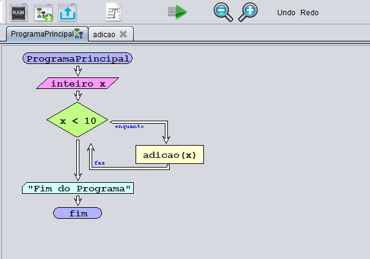

Por norma o nome de uma função deve representar aquilo que a função faz, assim quando lêmos o nome de uma função ficamos a saber no geral o que ela faz.
O nome da função deve ser único, ou seja, não pode ser igual ao de outra função ou de alguma variável. Também não pode ter o nome de palavras reservadas da liguagem de programação que tivermos a programar.
Cada função tem que ter um nome único.
Uma função pode ser invocada a partir de outras funções
Uma função deve realizar uma única tarefa bem definida
O código de uma função deve ser independente e o mais genérico possível, para ser possível utilizá-lo noutros projectos.
Na imagem a baixo encontra-se uma imagem que contem em volta um rectangulo de cor vermelha
Esse botão representa a adição de uma função ao fluxograma
A imagem a baixo representa um fluxograma que contem um ciclo Enquanto...Faz
Dentro deste ciclo existe o chamamento da função adicao.

Esta função adição vai pegar na variavel x que vem do programa principal e vai lhe adicionar 1.

Quando executamos o fluxograma, este vai ser executado normalmente.

Quando este chega ao local para chamar a funcão esta é aberta ao lado.
Quando acabar a execução da função, a execução passa outravez para o programa principal "fechando" a função